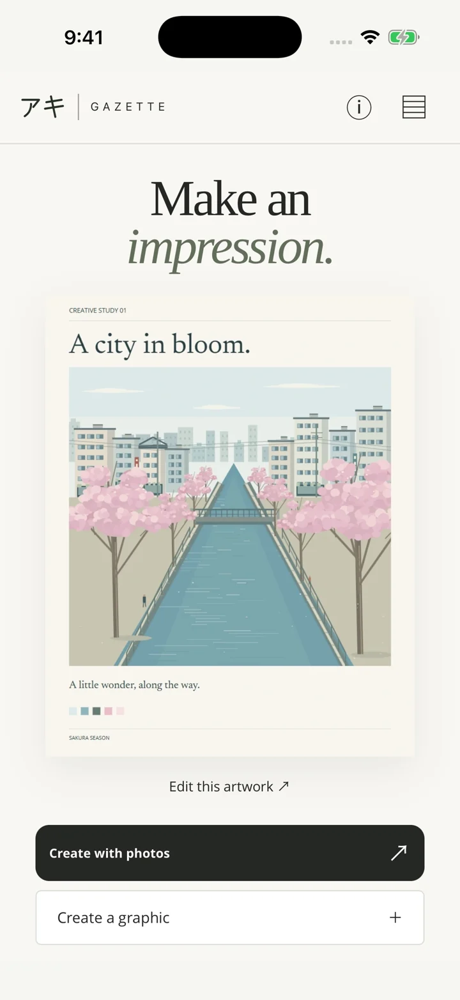
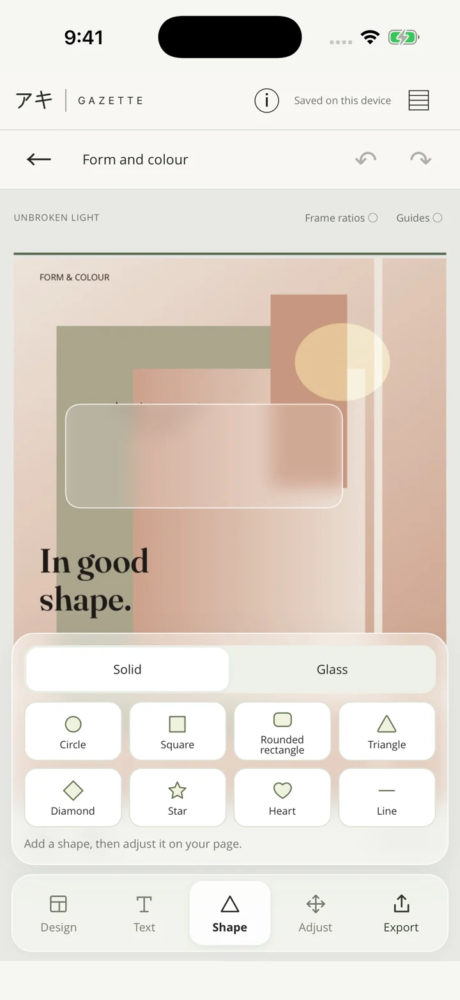
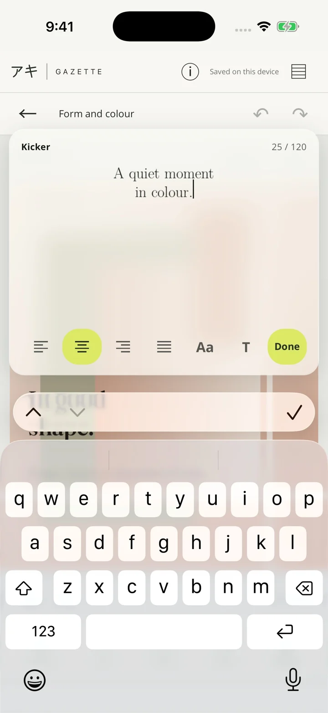
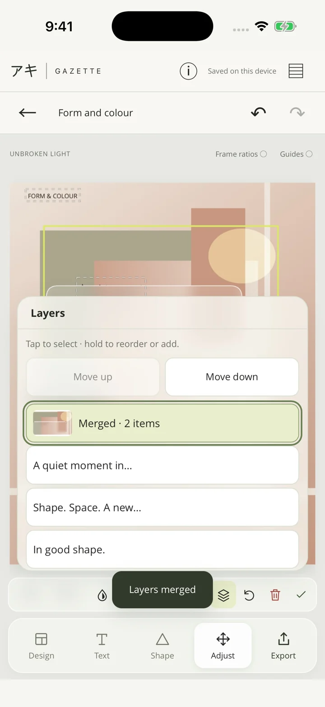
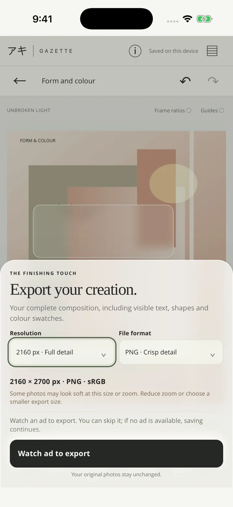

A visual journal
Bring a weekend, a trip or the details of an ordinary day onto one page.
Your photos. Your graphics. Your point of view.
Turn photographs and ideas into a page of your own. Start with your images or create a graphic, find a design, and make every detail yours.
Version 1.2.1 has been submitted for App Store and TestFlight review. Check the invitation for public availability.

Native screenshots show iOS 1.2.1 (12), submitted for Apple review.
Photo + graphictwo ways to begin
20illustrated subjects to explore
7formats for different stories
1–9photographs in a composition
A day worth remembering. A collection taking shape. An announcement ready to share. Gazette brings photographs, type and original graphics together.
Bring a weekend, a trip or the details of an ordinary day onto one page.
Arrange objects, work in progress or a set of photographs with a shared mood.
Give an image context with a headline, a caption or a longer personal note.
Pair your photographs and words for a launch, an invitation or a simple update.
Photo Story, Portfolio, Reflection, Announcement or Promotion: choose what you want to make, then explore designs suited to it. Start with one photograph or bring together as many as nine.
The Design panel presents fitting samples for your purpose. Apply a composition, then use Try another design to explore a new arrangement while keeping your words.
Bring photographs into editorial pages, bold covers and framed compositions. Choose a format and refine the balance of pictures and type.
Create a graphic for a reflection, announcement or promotion. Combine type, shapes, illustrated scenes and colour without importing a photograph.
Adjust frames, lettering, shapes and layers. A prepared design is a starting point, with room for your own decisions.
A Sakura-lined canal, a quiet landscape, a little world in pixels. Explore 20 illustrated subjects across nature, Japanese-inspired scenes and pixel artwork, alongside abstract graphic designs.
On the home screen, choose Edit this artwork to open your own editable copy of the Sakura city scene. Its buildings, blossoms and water are made from shapes you can change.

Go from a quiet serif to a bold headline. Explore expressive type pairings, from Bodoni Moda, Cormorant Garamond and Newsreader to Fraunces, Barlow Condensed and Syne. Caveat, Kalam and Patrick Hand add a handwritten touch.
Let a typography-led layout suggest its pairing, or choose your own. The fonts are included in the app, ready when inspiration arrives.

A layout gets the page moving. Preview changes photographs inside their frames. Adjust brings compact tools to selected frames, text, shapes and colour swatches, keeping the page in place.
In Adjust, select a frame, text block, shape or swatch group. Drag from elsewhere on the preview to move it, keeping your fingers out of the way.
Pinch outside selected text to scale the lettering. Pinch inside it or drag its side handles to change wrapping width. Alignment guides and angle snapping help items settle into place.
In Preview, drag a photograph inside its frame and pinch to zoom. In Adjust, choose a fixed or freeform frame ratio; inside gestures adjust the crop, while outside gestures move and resize the frame.
Panels leave out the close button. Tap outside to dismiss them and return to your composition. Item icons open compact tools for font, colour, opacity and blending.
Add Solid or Glass shapes, adjust tint and blur, and explore sixteen blend modes. Use side handles to change a shape’s width and top or bottom handles to change its height. Pinch to scale and rotate the whole shape.
In Adjust, hold an item to reveal Duplicate. Open Layers, hold anywhere on an item’s row, then drag to change its order. A quick swipe scrolls the list.

Make a portrait post, a square collection, a tall story, a landscape composition or a print in A4 or 4R. Change the format while working to explore a different balance of pictures and space.
No Gazette account to create. Start with photographs or a graphic and take the composition as far as you like.
Import one to nine photographs, create a graphic, or open an editable copy of the Sakura artwork. Your original photographs stay unchanged.
Choose your purpose, format and design, then explore type and colour. Refine image crops in Preview and selected item positions in Adjust.
Preview your export, choose PNG or JPEG and a resolution, then save to Photos, Files or the system share sheet.

Choose PNG for crisp detail or JPEG for a familiar, shareable image. For screen formats, choose a width of 1080, 1440 or 2160 pixels. Gazette shows the full dimensions for your chosen format: a Story at 2160 pixels wide is 2160 × 3840. A4 exports at 2480 × 3508 and 4R at 1200 × 1800, both with 300 dpi metadata.
Save the finished composition to Photos, choose a place in Files or send it through the system share sheet.
Keep editable projects on your device and return to their photographs, text and layout later. Export a finished image when you are ready to share it.
PNG and JPEG flatten the composition into an image. Keep the local project if you want to change individual elements again.
Gazette does not require an account or upload your project photographs and text to an Aki server. The editor, layouts and fonts are bundled in the app.
Local projects are not a cloud backup. Deleting the app or clearing its data can remove them, so save finished images somewhere you want to keep them.
Advertising and consent services use the internet and may process device, advertising, usage and diagnostic data. Gazette requests nonpersonalized ads.
Permission to add an export to Photos is separate from selecting images to import. Files and sharing use the system destination you choose.
For iPhone & iPad
Free with export ads. No Gazette account required.
Version 1.2.1 (12) is waiting for TestFlight review. Check the public invitation for availability, then follow these steps on your iPhone or iPad.
No redemption code is needed for this public link. An approved, unexpired build must be available before you can install.
The latest iPhone and iPad update has also been submitted for App Store review. A public Google Play download is not available yet.
Need a hand? Visit Gazette support.
Gazette combines photographs, text, shapes and colour into a single composition. Create photo stories and portfolios, or make graphics for reflections, announcements and promotions. Start with a design, then make it your own.
Gazette supports iPhone with iOS 16 or later and iPad with iPadOS 16 or later. When an approved build is available, open the TestFlight invitation on your device and follow its installation steps. See the release availability note above for the latest update.
When an approved build is available, install Apple’s TestFlight app, then return here and open Gazette’s public invitation. New testers tap Accept, then Install. You don’t need a redemption code. The latest build is waiting for TestFlight review; the public invitation shows current availability. Follow the step-by-step installation guide above.
The Android build is prepared. A public Google Play download is not available yet. The latest iPhone and iPad update is awaiting App Store and TestFlight review.
In Adjust, tap the item to select it. Drag from another part of the preview to move it, or pinch and twist there with two fingers to resize and rotate. Tap the selected item again to deselect it, or tap another item to switch. The Adjust guide walks through the controls.
Yes. Gazette is free with export ads. You choose Watch ad to export to begin saving a finished composition. An ad that is skipped, dismissed or unavailable does not prevent the export.
A composition supports one to nine photographs. Layouts adapt to the number you choose. The optional Symmetry setting is available for even counts of two, four, six or eight photographs.
A larger text editor opens above the usual keyboard, and the main preview keeps its size. Left, centre, right and justify remain visible while you type. Tap outside or choose Done to apply the edit. These controls are shown in the version 1.2.1 screenshots.
Yes. Headline, supporting copy, label and caption fields are joined by up to eight extra text blocks. Choose a kicker, byline, quote, body passage or custom note, then adjust its alignment, position and rotation.
No account is required. The editor, templates and fonts are included in the app, and projects are stored locally. Advertising and consent need a connection. If an export ad is unavailable, Gazette still lets you continue saving.
No. Cropping, positioning and composition changes happen inside Gazette’s project. Export creates a separate finished image. Saving to Photos requires permission to add that exported image; choosing Files or Share uses the system destination you select.
A PNG or JPEG is a flattened image, so it does not keep separate editable frames and text. Reopen the saved project in Gazette to continue editing. Projects remain on that device and are not synced through an Aki account.
Send feedback from Gazette’s page in TestFlight, visit Gazette support or email akistudio.mobile@gmail.com. Include your device, iOS version, Gazette build and what you were trying to do. Send only photographs or screenshots you are comfortable sharing.